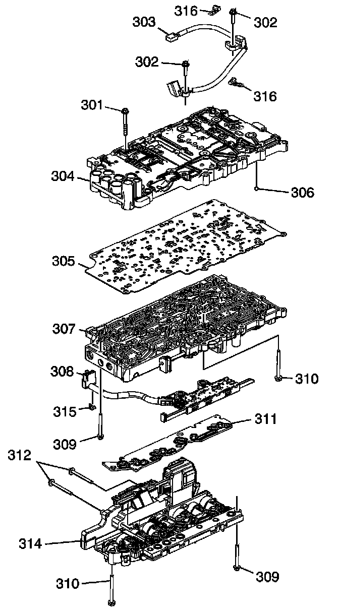
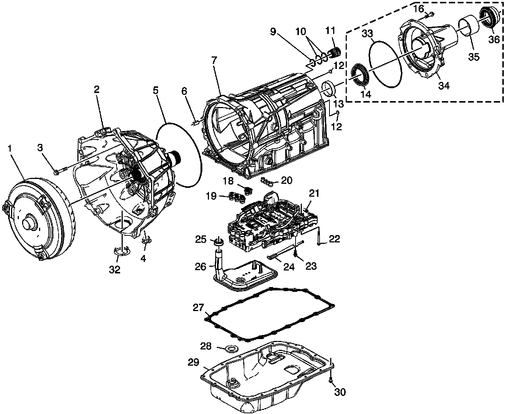
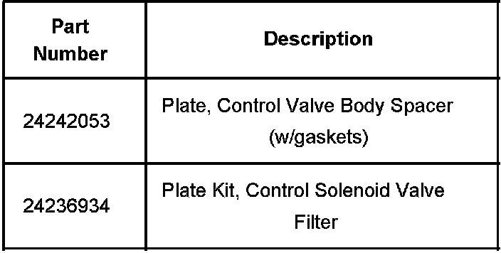
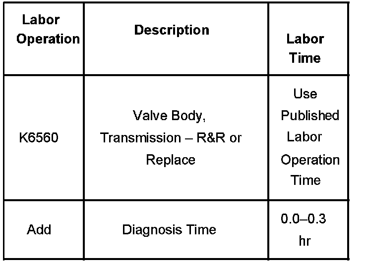

A/T - 6L80 Busy Shifting/MIL ON/DTC P1751 Set
Bulletin No.: 07-07-30-002Date: January 30, 2007
TECHNICAL
Subject:
6L80 Automatic Transmission Busy Shifting, MIL Illuminated, DTC P1751 Set (Replace Control Valve Body Spacer Plate)
Models:
2006 Cadillac XLR-V, STS-V
2006 Chevrolet Corvette
2007 Cadillac Escalade, Escalade ESV, Escalade EXT
2007 GMC Yukon Denali, Yukon Denali XL
with 6L80 (RPO MYC) Automatic Transmission
Condition
Some customers may comment on busy or frequent up and down shifts in 3rd, 4th, 5th or 6th gear at approximately 48-80 km/h (30-50 mph). The MIL may also be illuminated and a DTC P1751 stored in the TCM.
Cause
This condition may be caused by an undersized hole or debris in the control valve body spacer plate (305).
Correction


To correct this condition the control valve body spacer plate (305) must be replaced. The electrical connector seals (9, 10), fluid pump seals (18, 19), center support seal (20) and the filter plate assembly (311) should also be replaced. These parts are included in the filter plate kit listed below.
Changes to the control valve body spacer plate were implemented November 4, 2006 in transmission assemblies to prevent this condition. Refer to the Control Valve Body Assembly Disassemble and Assemble procedures in the Unit Repair information of SI.
2006 Car Applications - Do NOT run service fast learn adapts. A drive procedure must be performed instead. Refer to bulletin 06-07-30-031 for more details.
2007 Truck Applications - Service fast learn adapts must be run. Refer to the Service Fast Learn Adapts procedure in SI. Also, bulletin 06-07-30-033 contains additional details.

Parts Information
Warranty Information

For vehicles repaired under warranty, use the table.

Disclaimer